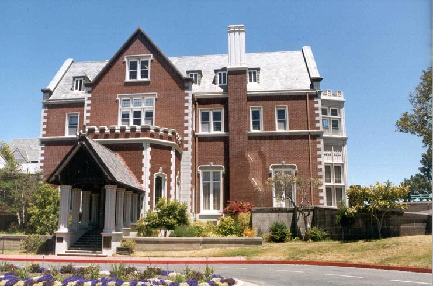
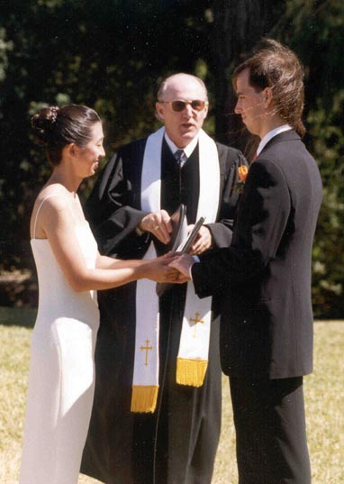
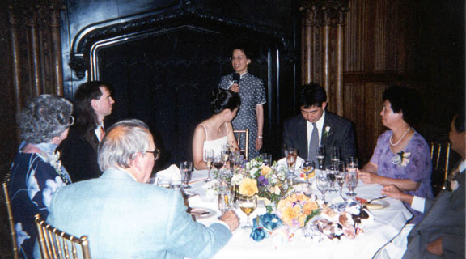

The Wedding of Rebecca Shen and Mark Fussell (California)

Rebecca Yin-Shi Shen and Mark Lewis Fussell were married on July Second, Nineteen hundred and ninety nine. The ceremony and main reception were held at Kohl Mansion in Burlingame California. It was a beautiful day, which allowed the ceremony and hors d'oeuvres to be outside.
California Photos
Here are some of the photos from the main ceremony and reception in California.Ceremony

The ceremony (PDF) was officiated by Reverend Edwin Holt. Mark and Rebecca exchanged the following vows
Mark's Vows
Rebecca, please join me in life as my partner, my lover, my friend and my wife. I cherish the relationship that we have found together and wish to make it last for an eternity. I promise to continually discover who you are and help you to fulfill your needs, your goals, and your dreams. I also promise to reveal myself to you, so you can see into my heart and assist me with my dreams. I believe that together we can become our best selves and I will strive to make that happen. I will always stand beside you with an open heart as we journey through life together.
Rebecca's Vows
Mark, I promise before God, our families, and our friends,, to be your loving wife,, to continue to be your loyal friend,, and to be an equal partner for life. I promise to give you my deepest love and respect,, and to willingly open my heart to you, as a sanctuary of warmth and peace, and a refuge of love and strength. I will honor your goals and dreams, and promise to help you fulfill them. I pledge to you my trust, support, and honesty, as we journey through life together.
Both Rebecca and Mark survived the ceremony and each added a ring to their finger.
Music
During dinner Beatrice Lam gave the first toast and would soon follow that by encouraging others (Hod, Shang, Patrick, Larry)
to go back in time to (sometimes) even before Mark and Rebecca had even met.
Taymin Liu (Rebecca's third Shen aunt) gave a very nice and very appreciated
toast welcoming Mark into the highly discriminating Shen family.
Mark welcomed everyone to the celebration, was honored to be able to join Rebecca's families, and thanked those people (especially Bea and Geoffrey) that made the day possible. This was followed by a toast to the most special group he knows (PDF).
Rebecca and Mark
 The ceremony music was organized by Geoffrey Chang and performed by
Geoffrey, Jenny Meyer, Allen Edwards, Anna Oh, and Eric Brinkmann.
The procession music was "Wedding Day At Troldhaugen" (Listen) by Edvard Grieg (see Edvard Grieg).
The recession music was a Mozart Suite.
The ceremony music was organized by Geoffrey Chang and performed by
Geoffrey, Jenny Meyer, Allen Edwards, Anna Oh, and Eric Brinkmann.
The procession music was "Wedding Day At Troldhaugen" (Listen) by Edvard Grieg (see Edvard Grieg).
The recession music was a Mozart Suite.
Reception
The reception was also at Kohl Mansion, both outside on the patio and inside for a buffet dinner.
The dining featured a fabulous wine selection (PDF) provided by Beatrice Lam and Luke Manley, and a cornucopia of cheeses to go with it.
The dinner menu (PDF) included: Wine,
Appetizers and Cheese,
Pasta, Vegetables, Chicken, and Roast Tenderloin,
Fruit and Ice Cream for Dessert, and
Cake (which seems to have replaced the after-dinner mint).
Toasts

Games and Dancing
On every dining table there were wrapped boxes,
and it took just a few seconds for the question
"What are the wrapped boxes for?" to arise.
There were also nine Beannie Babies on Rebecca and Mark's table.
The seek out new life forms game
 The wrapped boxes were presents to the guests, and within each wrapping was either a Lego or a 3-D puzzle.
There were thirty different presents, but there were also three of each kind randomly dispersed throughout the room.
The task of the game was
The wrapped boxes were presents to the guests, and within each wrapping was either a Lego or a 3-D puzzle.
There were thirty different presents, but there were also three of each kind randomly dispersed throughout the room.
The task of the game was
To find the owners of the two matching gifts and exchange among all three of you:
The first three sets of three to correctly answer the above questions won the Beannie Babies.
Although this started out pretty quietly as people searched out and discovered their match, it soon swelled
into ninety people trying to get their Beannie Babies.
Whether people won a Beannie Baby or not, they could still build their Lego or Puzzle.
We hope people enjoyed the game (it was the one of the few things it would have been fun to get on videotape).
Dancing
 Finally, Mark and Rebecca enjoyed their first dance as Husband and Wife.
This was followed by some Salsa and a little
Jitterbugging.
Finally, Mark and Rebecca enjoyed their first dance as Husband and Wife.
This was followed by some Salsa and a little
Jitterbugging.
Farewells
We hope everyone enjoyed the celebration and that all of our futures together will be even happier than our past.